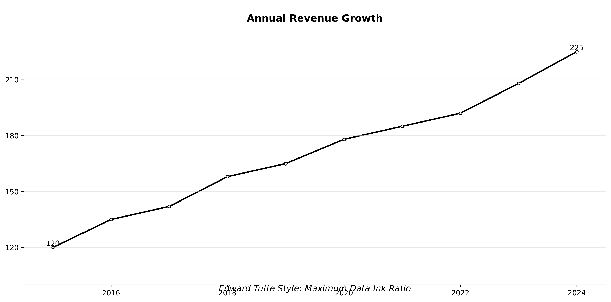

데이터 시각화 Data Visualization
현대인을 위한 실전 시각화 가이드
홍성학
8/23/25
발표 자료 접근 안내
QR 코드
스마트폰으로 QR코드를 스캔하세요
발표자 소개
목차
오늘 다룰 주요 내용
- 데이터 시각화의 중요성과 현대적 접근
- 다양한 시각화 도구와 라이브러리
- 효과적인 시각화 설계 원칙
- 실무에서 활용할 수 있는 시각화 패턴
- 인터랙티브 및 대시보드 구축
- AI 시대 시각화의 미래
데이터 시각화란 무엇인가?
시각화의 정의와 핵심 개념
데이터 시각화의 본질
- 데이터를 시각적 형태로 변환하는 과정
- 패턴, 트렌드, 관계를 직관적으로 이해
- 복잡한 정보를 간단하게 전달
- 데이터 기반 의사소통의 핵심 도구
현대 사회에서의 역할
- 빅데이터 시대의 필수 스킬
- 비즈니스 인텔리전스의 핵심
- 데이터 민주화를 통한 접근성 향상
- 글로벌 의사소통의 공통 언어
시각화가 필요한 이유
- 인간의 시각 처리: 텍스트보다 60,000배 빠른 이미지 인식
- 패턴 발견: 숨겨진 인사이트와 이상치 탐지
- 기억 효과: 시각적 정보는 3일 후에도 65% 기억
- 효과적 소통: 복잡한 개념을 단순하게 전달
시각화 용어 정리
혼용되는 용어들의 정확한 의미
Chart (차트)
- 정의: 데이터를 시각적으로 표현하는 모든 형태
- 특징: 가장 포괄적인 용어
- 예시: 막대차트, 원차트, 선차트 등
- 용도: 비즈니스 보고서, 대시보드
Graphic (그래픽)
- 정의: 시각적 디자인 요소가 강조된 표현
- 특징: 미적 요소와 정보 전달의 결합
- 예시: 인포그래픽, 뉴스 그래픽
- 용도: 대중 커뮤니케이션, 마케팅
Graph (그래프)
- 정의: 수학적 관계를 표현하는 시각화
- 특징: 정확한 수치와 관계 중심
- 예시: 함수 그래프, 네트워크 그래프
- 용도: 학술 연구, 수학적 분석
Plot (플롯)
- 정의: 데이터 포인트를 좌표에 배치
- 특징: 통계 분석 도구에서 주로 사용
- 예시: 산점도, 박스플롯, 히스토그램
- 용도: 데이터 분석, 통계적 탐색
실무에서의 용어 선택 가이드
- 비즈니스 맥락: “차트”를 일반적으로 사용
- 분석 작업: “플롯”이 더 정확한 표현
- 대중 소통: “그래픽”이 친숙한 용어
- 학술 논문: “그래프”가 엄밀한 표현
막대 차트 (Bar Chart)
언제 사용하나요?
- 범주형 데이터 비교에 최적
- 순위나 크기 비교
- 여러 그룹 간 차이 시각화
특징
- 직관적 이해: 막대 길이로 값 비교
- 수평/수직: 레이블 길이에 따라 선택
- 그룹화 가능: 다중 시리즈 비교
사용 예시
- 지역별 매출 비교
- 제품별 판매량
- 부서별 인원수
- 월별 성과 지표
선 차트 (Line Chart)
언제 사용하나요?
- 시간 흐름에 따른 변화
- 트렌드 패턴 분석
- 연속적인 데이터 표현
특징
- 시계열 데이터에 특화
- 패턴 발견: 상승, 하락, 계절성
- 다중 시리즈: 여러 변수 동시 비교
사용 예시
- 주가 변동 추이
- 월별 방문자 수
- 온도 변화
- 성장률 추이
원 차트 (Pie Chart)
언제 사용하나요?
- 전체 대비 비율 표현
- 구성 요소의 상대적 크기
- 카테고리 수가 적을 때 (5-7개 이하)
특징
- 원형 표현: 전체를 100%로 표시
- 색상 구분: 각 카테고리별 구분
- 제한사항: 많은 카테고리 시 가독성 저하
사용 예시
- 시장 점유율
- 예산 배분
- 설문조사 결과
- 성별/연령대 분포
산점도 (Scatter Plot)
언제 사용하나요?
- 두 변수 간 관계 분석
- 상관관계 탐색
- 이상치 발견
특징
- 점 분포: 각 데이터를 점으로 표현
- 추세선: 상관관계 시각화
- 패턴 발견: 클러스터, 이상치 식별
사용 예시
- 키와 몸무게 관계
- 광고비와 매출 관계
- 온도와 아이스크림 판매량
- 학습시간과 성적
히스토그램 (Histogram)
언제 사용하나요?
- 데이터 분포 확인
- 정규성 검정
- 빈도 분석
특징
- 구간별 빈도: 연속형 데이터를 구간으로 나눔
- 분포 형태: 정규분포, 치우침 등 확인
- bin 크기: 구간 크기에 따라 모양 변화
사용 예시
- 시험 점수 분포
- 연령대별 인원 분포
- 소득 분포
- 제품 품질 측정값
박스 플롯 (Box Plot)
언제 사용하나요?
- 데이터 요약 통계 표현
- 이상치 탐지
- 그룹 간 분포 비교
특징
- 5수 요약: 최솟값, Q1, 중앙값, Q3, 최댓값
- 이상치 표시: 박스 밖 점들
- 분포 압축: 분포를 한눈에 파악
사용 예시
- 부서별 급여 분포
- 지역별 기온 분포
- 제품별 품질 지표
- 그룹별 성과 비교
시계열 그래프 (Time Series Chart)
언제 사용하나요?
- 시간 흐름에 따른 데이터 변화
- 장기 트렌드 분석
- 계절성 패턴 탐지
특징
- 연속적 시간축: 일, 월, 년 단위
- 패턴 인식: 상승, 하락, 주기성
- 이동평균: 노이즈 제거 및 트렌드 강조
사용 예시
- 주가 차트
- 기온 변화 추이
- 웹사이트 방문자 통계
- 경제 지표 변화
에어리어 차트 (Area Chart)
언제 사용하나요?
- 누적 데이터 표현
- 구성 비율 변화 시각화
- 전체 대비 부분 강조
특징
- 영역 채우기: 선 아래 면적 강조
- 누적 가능: 여러 시리즈 적층
- 시각적 임팩트: 변화량 직관적 파악
사용 예시
- 월별 매출 구성
- 에너지 소비 패턴
- 인구 구성 변화
- 예산 배분 추이
트리맵 (Treemap)
언제 사용하나요?
- 계층적 데이터 표현
- 공간 효율적 시각화
- 비율 비교에 특화
특징
- 사각형 크기: 값의 크기 반영
- 색상 인코딩: 추가 차원 표현
- 중첩 구조: 다단계 분류 가능
사용 예시
- 포트폴리오 구성
- 웹사이트 트래픽 분석
- 시장 점유율
- 파일 시스템 용량
레이더 차트 (Radar Chart)
언제 사용하나요?
- 다차원 성능 비교
- 균형점 분석
- 프로필 시각화
특징
- 방사형 축: 여러 변수 동시 표현
- 다각형 형태: 전체적 패턴 파악
- 중첩 비교: 여러 객체 동시 분석
사용 예시
- 제품 성능 비교
- 직원 역량 평가
- 게임 캐릭터 능력치
- 지역별 생활 지표
평행 좌표 그래프 (Parallel Coordinates)
언제 사용하나요?
- 고차원 데이터 탐색
- 패턴 발견 및 클러스터링
- 이상치 탐지
특징
- 평행 축: 각 변수를 수직선으로 표현
- 연결선: 데이터 포인트 간 관계
- 패턴 인식: 교차점으로 상관관계 파악
사용 예시
- 다변량 통계 분석
- 제품 특성 비교
- 학생 성적 분석
- 센서 데이터 모니터링
역사 속 시각화의 걸작들
데이터 시각화의 전설적 사례들
John Snow의 콜레라 지도 (1854)
- 역학의 아버지: 최초의 질병 지도 시각화
- 인과관계 발견: 콜레라 발병원인을 지도로 규명
- 공중보건 혁명: 오염된 급수원을 시각적으로 증명
Charles Minard의 나폴레옹 원정 (1869)
- 정보 디자인의 걸작: “최고의 통계 그래픽”
- 6차원 데이터: 군대규모, 경로, 온도, 시간 등
- 비극의 시각화: 42만→1만명의 참혹한 현실
Florence Nightingale의 장미도표 (1858)
- Rose Diagram: 원형 면적 차트의 혁신
- 의료 개혁: 병원 위생상태의 시각적 증명
- 데이터 저널리즘: 통계를 통한 사회 변화
Hans Rosling의 Gapminder
- 동적 시각화: 시간의 흐름을 애니메이션으로
- 세계 발전상: 건강과 부의 상관관계 시연
- 버블 차트: 다차원 데이터의 직관적 표현
John Snow의 콜레라 지도 (1854)

John Snow’s Cholera Map
현대 역학의 시작점
- 과학적 접근: 데이터를 통한 가설 검증
- 공간 분석: 지리적 패턴으로 원인 추적
- 시각적 증명: 브로드 스트리트 펌프가 감염원
Charles Minard의 나폴레옹 원정도 (1869)

Charles Minard’s Napoleon March
Edward Tufte가 극찬한 “최고의 통계 그래픽”
- 병력 변화: 선의 두께로 군대 규모 표현
- 이동 경로: 진군과 후퇴 경로를 색상으로 구분
- 기온 정보: 하단 차트로 혹독한 추위 표현
Florence Nightingale의 장미도표 (1858)

Florence Nightingale’s Rose Diagram
데이터 저널리즘의 선구자
- 혁신적 차트: 원형 면적 차트(Coxcomb) 개발
- 사회 개혁: 통계로 의료 시스템 문제점 부각
- 인명 구조: 시각화를 통한 실질적 변화 달성
현대 시각화의 혁신: Gapminder
Hans Rosling의 “The Joy of Stats”
- 동적 애니메이션: 시간 흐름에 따른 데이터 변화
- 글로벌 트렌드: 국가별 발전 상황을 한눈에
- 다차원 표현: 인구(크기), 지역(색상), 소득-수명(위치)
“200년간의 국가 발전사를 4분만에” - Hans Rosling
혁신적 특징
- 데이터 스토리텔링의 새로운 패러다임
- 일반 대중도 이해할 수 있는 복잡한 데이터
- 감정적 연결: 통계를 인간의 이야기로
Edward Tufte: 정보 디자인의 아버지
핵심 철학
- Data-Ink Ratio: 잉크 사용량 대비 정보량 최대화
- Chartjunk 제거: 불필요한 장식 요소 배제
- 고밀도 정보: 작은 공간에 많은 정보
주요 원칙
- 무결성: 데이터의 정확한 표현
- 우아함: 단순하면서도 정교한 디자인
- 다차원성: 복잡한 관계의 명확한 표현

대표작과 영향
- “The Visual Display of Quantitative Information”
- 스파크라인(Sparklines) 개념 창시
- 현대 정보 디자인의 기초 확립
D3.js: 데이터 기반 문서
혁신적 접근
- 웹 표준 기반: HTML, SVG, CSS 활용
- 데이터 바인딩: 데이터와 DOM 요소 직접 연결
- 무한한 자유도: 모든 시각화 구현 가능
핵심 개념
- Enter, Update, Exit: 데이터 변화 처리
- 선택자(Selectors): jQuery 스타일 요소 조작
- 트랜지션: 부드러운 애니메이션
D3.js의 영향
- 웹 시각화 표준으로 자리잡음
- Observable 플랫폼의 기반
- 데이터 저널리즘 혁신 주도
ggplot2: Grammar of Graphics
Leland Wilkinson의 문법
- 레이어 시스템: 요소별 단계적 구성
- 구성 요소: Data + Aesthetics + Geoms + Stats
- 체계적 접근: 일관된 문법 구조
핵심 장점
- 빠른 프로토타이핑: 간결한 코드로 복잡한 차트
- 일관된 스타일: 통일된 디자인 시스템
- 확장성: 테마와 패키지 생태계
R 생태계의 핵심
- Tidyverse의 시각화 엔진
- 재현 가능한 연구의 표준
- 통계 시각화 분야 선도
워싱턴 포스트: 데이터 저널리즘의 혁신
데이터 저널리즘의 선구자
- 스토리텔링과 데이터 융합: 복잡한 이슈를 시각적으로 전달
- 실시간 보도: 선거, 코로나19, 기후변화 등
- 대중 접근성: 일반인도 이해할 수 있는 데이터 표현
혁신적 시각화 기법
- 인터랙티브 차트: 독자 참여형 콘텐츠
- 지리적 시각화: 지역별 데이터 분석
- 시계열 애니메이션: 변화 과정의 동적 표현
대표적인 성과
- 2020 대선 실시간 개표 추이
- 코로나19 확산 시각화
- 기후변화 온도 변화 나선형 차트
- 총기 사건 추적 및 분석
MBC 선거 여론조사: 한국형 데이터 저널리즘
혁신적 선거 보도
- 실시간 여론조사: 선거 기간 동적 변화 추적
- 벌집지도(Hexagonal Map): 지역별 선거 결과 시각화
- 모바일 최적화: 실시간 접근 가능한 인터랙티브 대시보드
데이터 기반 선거 분석
- 지역별 세분화: 시/군/구 단위 상세 분석
- 연령/성별 교차분석: 다차원 유권자 행태 분석
- 트렌드 예측: 통계 모델 기반 당선 가능성
한국 미디어의 변화
- 전통 방송과 디지털의 융합
- 데이터 기반 객관적 보도
- 시청자 참여형 선거 콘텐츠
- 실시간 빅데이터 활용
데이터 시각화, 왜 중요한가?
시각화의 힘
- “데이터는 보이는 것이 믿는 것”
- 인간의 시각 처리 능력: 13밀리초 내 이미지 인식
- 복잡한 패턴을 직관적으로 파악
- 이상치, 트렌드, 상관관계 신속 발견
- 의사결정자에게 명확한 인사이트 전달
비즈니스에서의 가치
- 의사결정 속도 40% 향상 → ROI 증대
- 크로스팀 커뮤니케이션 효율성 증대
- 데이터 기반 비즈니스 인사이트 도출
- 데이터 리터러시 향상으로 경쟁 우위 확보
현대 데이터 시각화의 트렌드
데이터 폭발 시대 2.0
- 매일 2.5퀸틸리언 바이트의 데이터 생성
- IoT, 소셜미디어, 실시간 스트리밍 데이터 확산
- 클라우드 네이티브 분석 플랫폼 주류화
- AI/ML 기반 자동 시각화 및 인사이트 생성
시각화 도구의 진화
코드 기반 도구
- Python: matplotlib, seaborn, plotly
- R: ggplot2, shiny, lattice
- JavaScript: D3.js, Chart.js, Three.js
비즈니스 인텔리전스 도구
- Tableau, Power BI
- Looker, Qlik Sense
- Observable, Streamlit
Part 1: 시각화 설계 원칙
효과적인 시각화의 핵심 원칙
- 명료성(Clarity)
- 5초 이내에 핵심 메시지가 명확하게 전달되어야 합니다.
- 정확성(Accuracy)
- 데이터의 무결성, 통계적 정확성을 유지해야 합니다.
- 효율성(Efficiency)
- 불필요한 시각적 요소를 줄이고, 최소한의 정보로 최대 효과를 내야 합니다.
- 심미성(Aesthetics)
- 사용자 경험을 고려한 깔끔하고 일관된 디자인이 필요합니다.
- 접근성(Accessibility)
- 색각 이상자, 다양한 기기 등 모든 사용자가 정보를 이해할 수 있도록 설계해야 합니다.
시각화 설계 프로세스 (1/2)
1. 목적과 대상 정의
- 비즈니스 목표: 어떤 액션을 유도할 것인가?
- 타겟 오디언스: 경영진? 분석가? 일반 사용자?
- 핵심 질문: 어떤 인사이트를 발견해야 하는가?
2. 데이터 탐색 및 준비
- EDA (Exploratory Data Analysis)
- 변수 간 관계성 분석
- 데이터 품질 검증 (결측값, 이상치)
시각화 설계 프로세스 (2/2)
3. 차트 유형 선택 전략
- 비교: 막대, 컬럼 차트
- 시계열: 선, 영역 차트
- 구성: 파이, 도넛, 트리맵
- 상관관계: 산점도, 버블 차트
- 분포: 히스토그램, 박스플롯
- 지리적: 지도, 히트맵
4. 시각적 인코딩 및 최적화
- 색상 체계: 일관성 있는 컬러 팔레트
- 타이포그래피: 가독성 최적화
- 사용자 피드백 기반 반복 개선
Part 2: 다양한 시각화 도구와 기술
Python 생태계
Matplotlib 기반
- matplotlib: 기본 플롯 라이브러리
- seaborn: 통계적 시각화
- pandas.plot: 빠른 프로토타이핑
웹 기반 인터랙티브
- plotly: 인터랙티브 차트
- bokeh: 웹 애플리케이션
- streamlit: 대시보드 구축
Python의 시각화 철학
- 코드 중심: 프로그래밍적 접근
- 모듈화: 각 라이브러리의 전문성
- 오픈소스: 활발한 커뮤니티
R 생태계
ggplot2 중심
- ggplot2: Grammar of Graphics
- patchwork: 다중 플롯 조합
- ggthemes: 전문적 테마
특화 패키지
- shiny: 웹 애플리케이션
- visNetwork: 네트워크 시각화
- DT: 인터랙티브 테이블
R의 시각화 철학
- 통계 중심: 학술적 접근
- Grammar of Graphics: 체계적 구조
- 연구 지향: 재현 가능한 분석
JavaScript와 웹 기술
D3.js 기반 고급 시각화
- 완전한 커스터마이징: SVG 기반 벡터 그래픽
- 고도의 인터랙티브 기능
- 애니메이션과 전환 효과
현대적 차트 라이브러리
- Chart.js: 간단하고 반응형
- ApexCharts: 모던 모바일 친화적
- Three.js: 3D 시각화
웹 기술의 장점
- 범용성: 모든 플랫폼에서 실행
- 공유 용이성: URL 기반 배포
- 반응형: 다양한 화면 크기 지원

Microsoft Excel: 가장 친숙한 시각화 도구
Excel의 시각화 강점
- 높은 접근성: 전 세계 10억 명 이상 사용
- 직관적 인터페이스: 드래그 앤 드롭으로 차트 생성
- 데이터와 차트 통합: 스프레드시트 기반 작업
- 빠른 프로토타이핑: 아이디어를 즉시 시각화
주요 차트 유형
- 기본 차트: 막대, 선, 원형, 영역
- 분석 차트: 산점도, 버블, 히스토그램
- 특수 차트: 콤보, 도넛, 레이더
- 지도 차트: 3D 맵, 지역별 데이터
실무 활용 팁
- 피벗 차트: 대용량 데이터 요약 시각화
- 조건부 서식: 데이터 패턴 강조
- 스파크라인: 셀 내 미니 차트
- 슬라이서: 인터랙티브 필터링
Tableau: 비즈니스 인텔리전스의 선두주자
Tableau의 핵심 철학
- VizQL 엔진: 직관적 드래그 앤 드롭 인터페이스
- 다양한 데이터 연결: 100+ 데이터 소스 지원
- Show Me 기능: 최적 차트 자동 추천
- 협업 중심: Tableau Server/Cloud 기반 공유
고급 시각화 기능
- 듀얼 축: 서로 다른 척도의 데이터 비교
- 액션 필터: 차트 간 상호작용
- 계산 필드: 고급 데이터 변환
- 지리적 분석: 내장된 지도 기능
비즈니스 가치
- 신속한 인사이트: 몇 분 만에 대시보드 구축
- 데이터 민주화: 비전문가도 고급 분석 가능
- 확장성: 개인부터 엔터프라이즈까지
- 모바일 지원: 언제 어디서나 데이터 접근
TIBCO Spotfire: 고급 분석 플랫폼
Spotfire의 차별화 요소
- 고급 분석: 통계 모델링과 예측 분석
- 탐색적 분석: 실시간 데이터 드릴다운
- R/Python 통합: 오픈소스 분석 도구 연계
- 산업 특화: 제조, 바이오, 에너지 분야 특화
핵심 시각화 기능
- 스마트 산점도: 자동 패턴 인식
- 평행 좌표: 고차원 데이터 탐색
- 트렐리스 플롯: 다면 분석
- 시계열 분석: 예측 및 이상치 탐지
고급 분석 워크플로우
- 데이터 랭글링: 자동 데이터 준비
- 예측 모델링: 내장 ML 알고리즘
- 실시간 분석: 스트리밍 데이터 처리
- 협업 분석: 분석 결과 공유 및 토론
도구별 비교 및 선택 가이드
사용자 수준별 추천
- 초급자: Excel (친숙함, 낮은 진입장벽)
- 중급자: Tableau (직관적 BI 도구)
- 고급자: Spotfire (고급 분석 기능)
조직 규모별 고려사항
- 소규모: Excel + Power BI
- 중간 규모: Tableau + 클라우드
- 대기업: Spotfire + 엔터프라이즈 솔루션
프로젝트 성격별 선택
- 보고서: Excel, Tableau
- 대시보드: Tableau, Power BI
- 탐색적 분석: Spotfire, R/Python
- 예측 분석: Spotfire, SAS
비용 대비 효과
- 예산 고려: 라이선스 vs 오픈소스
- 교육 비용: 학습 곡선 고려
- 유지보수: IT 인프라 요구사항
Part 3: 실무 시각화 패턴
탐색적 데이터 분석 (EDA)
기본 통계 시각화
- 히스토그램: 분포 확인
- 박스플롯: 이상치 탐지
- 산점도 매트릭스: 다변수 관계
고급 탐색 기법
- 상관관계 히트맵
- 평행 좌표계
- t-SNE / PCA 시각화
히스토그램: 데이터 분포 탐색
언제 사용하나요?
- 연속형 데이터 분포 파악
- 정규성 검정 시각적 확인
- 이상치와 치우침 탐지
핵심 인사이트
- 분포 형태: 정규분포, 왜곡분포, 다봉분포
- 중심경향: 평균, 중앙값, 최빈값
- 산포도: 표준편차, 분산, 범위
EDA에서의 활용
- 변수별 분포 특성 파악
- 데이터 전처리 전략 수립
- 적절한 통계 모델 선택
상관관계 히트맵: 변수 간 관계 탐색
언제 사용하나요?
- 다변수 상관관계 한눈에 파악
- 다중공선성 문제 탐지
- 변수 선택 전략 수립
해석 방법
- 색상 강도: 상관계수 크기
- 양의 상관: 같은 방향 변화
- 음의 상관: 반대 방향 변화
실무 적용
- 특성 공학 아이디어 도출
- 불필요한 변수 제거
- 모델 성능 개선 방향 제시
산점도 매트릭스: 다변수 관계 시각화
언제 사용하나요?
- 모든 변수 쌍 관계 동시 확인
- 비선형 관계 패턴 탐지
- 클러스터 구조 파악
분석 포인트
- 산점도 패턴: 선형, 곡선, 클러스터
- 이상치 그룹: 특이한 데이터 포인트
- 밀도 분포: 데이터 집중 영역
고급 활용
- 차원 축소 전 관계 파악
- 세그멘테이션 기준 발견
- 예측 모델 변수 조합 최적화
평행 좌표: 고차원 데이터 탐색
언제 사용하나요?
- 고차원 데이터 패턴 파악
- 이상치 탐지 및 필터링
- 그룹별 특성 비교
해석 기법
- 선의 패턴: 데이터 포인트별 특성
- 교차점: 변수 간 상호작용
- 밀도 영역: 일반적 vs 특이 패턴
실무 활용
- 고객 세그멘테이션
- 제품 품질 관리
- 복합 지표 모니터링
t-SNE/PCA: 차원 축소 시각화
언제 사용하나요?
- 고차원 → 2D/3D 변환
- 숨겨진 패턴 발견
- 클러스터 구조 시각화
기법별 특징
- PCA: 선형 변환, 분산 보존
- t-SNE: 비선형, 지역 구조 보존
- UMAP: 빠른 속도, 글로벌 구조
머신러닝 연계
- 특성 추출 및 선택
- 클러스터링 전처리
- 모델 결과 해석
비즈니스 대시보드 설계
KPI 중심 레이아웃
상단 요약 영역
- 핵심 지표 카드
- 전기 대비 증감률
- 트래픽 라이트 시스템
상세 분석 영역
- 트렌드 분석 차트
- 구성 비율 분석
- 드릴다운 필터링
KPI 카드: 핵심 지표 한눈에
효과적인 KPI 카드 설계
- 명확한 수치: 큰 폰트로 핵심 값 강조
- 트렌드 표시: 전기 대비 증감 시각화
- 상태 색상: 성과 수준에 따른 색상 코딩
구성 요소
- 메인 수치: 현재 핵심 지표 값
- 변화율: 전기간 대비 증감률
- 미니 차트: 최근 트렌드 스파크라인
- 기준 기간: 데이터 수집 기간 명시
설계 원칙
- 단순명료: 5초 내 핵심 정보 파악
- 일관성: 통일된 레이아웃과 색상 체계
- 반응형: 다양한 화면 크기 대응
트렌드 분석 차트: 시간 흐름 추적
트렌드 차트의 핵심
- 시계열 데이터: 일, 주, 월, 년 단위 분석
- 패턴 인식: 계절성, 주기성, 이상치 탐지
- 다중 시리즈: 여러 지표 동시 비교
고급 기능
- 영역 차트: 누적 데이터 시각화
- 목표선: 타겟 대비 실적 비교
- 주석: 주요 이벤트 마커 표시
비즈니스 활용
- 매출 성장률 모니터링
- 고객 증감 추이 분석
- 시장 점유율 변화 추적
구성 비율 분석: 전체 대비 파트
효과적인 구성 분석
- 파이 차트: 5개 이하 카테고리
- 도넛 차트: 중앙에 총합 표시
- 스택 차트: 시간별 구성 변화
설계 가이드라인
- 색상 일관성: 브랜드 컬러 활용
- 정렬 원칙: 크기 순 또는 중요도 순
- 레이블링: 비율과 절대값 함께 표시
실무 적용 사례
- 매출 채널별 기여도
- 제품 카테고리별 수익 분석
- 지역별 성과 비중
드릴다운 필터링: 상세 분석
인터랙티브 필터링
- 계층적 탐색: 전체 → 지역 → 매장
- 시간 필터: 기간별 동적 조회
- 다중 필터: 여러 조건 조합 분석
사용자 경험 설계
- 직관적 인터페이스: 클릭 한 번으로 상세 보기
- 필터 상태 유지: 사용자 선택 기억
- 쉬운 리셋: 원래 상태 복귀 기능
고급 필터링 기능
- 동적 필터 연동
- 자동 추천 필터
- 저장된 필터 프리셋
통합 대시보드: 종합 관제판
레이아웃 전략
- 그리드 시스템: 일관된 배치와 비율
- 위계 구조: 중요도에 따른 크기 조절
- 반응형 디자인: 모바일부터 대형 화면까지
통합 설계 원칙
- 한눈에 파악: 5-7-2 법칙 적용
- 연관성 표현: 관련 지표 그룹핑
- 실시간 업데이트: 데이터 동기화
성공적인 대시보드 요소
- 명확한 정보 위계
- 일관된 시각적 언어
- 사용자 중심 설계
인터랙티브 시각화 기법
사용자 참여도 높이기
호버 툴팁 (Hover Tooltips)
언제 사용하나요?
- 상세 정보 제공: 차트 위 마우스 오버 시
- 공간 절약: 레이블 없이 정보 전달
- 사용자 경험: 직관적 정보 탐색
특징
- 다층 정보: 기본 + 상세 데이터
- 동적 표시: 실시간 정보 업데이트
- 스타일링: 브랜딩에 맞는 디자인
사용 예시
- 산점도의 개별 데이터 포인트 정보
- 지도의 지역별 통계
- 차트의 정확한 수치 확인
줌 및 팬 (Zoom and Pan)
언제 사용하나요?
- 대용량 데이터: 상세 영역 탐색
- 시계열 데이터: 특정 기간 집중 분석
- 지리적 데이터: 지역별 확대/축소
특징
- 확대/축소: 관심 영역 포커스
- 이동: 전체 데이터 영역 탐색
- 리셋: 원래 뷰로 복귀
사용 예시
- 주가 차트의 특정 기간 분석
- 대용량 산점도 탐색
- 지도 데이터의 지역별 확대
동적 필터링 (Dynamic Filtering)
언제 사용하나요?
- 실시간 조건 변경: 즉시 결과 확인
- 다중 조건: 복합 필터링
- 탐색적 분석: 다양한 시나리오 검토
특징
- 즉시 반응: 실시간 차트 업데이트
- 다차원 필터: 여러 변수 동시 적용
- 상태 유지: 필터 설정 기억
사용 예시
- 대시보드의 기간/지역 필터
- 제품 카탈로그의 조건별 검색
- 고객 세그멘테이션 분석
연결된 뷰 (Linked Views)
언제 사용하나요?
- 다중 차트 연동: 한 차트 선택이 다른 차트에 반영
- 다각도 분석: 동일 데이터를 여러 관점에서
- 패턴 발견: 차트 간 상관관계 탐색
특징
- 동기화: 선택/필터링 상태 공유
- 다차원 뷰: 동일 데이터셋의 다른 시각화
- 인터랙션: 클릭/브러시 선택 연동
사용 예시
- 산점도와 히스토그램 연동
- 지도와 막대차트 연계 분석
- 시계열과 분포도 동시 탐색
애니메이션 (Animation)
언제 사용하나요?
- 시간적 변화: 데이터 변화 과정 표현
- 스토리텔링: 데이터 내러티브 구성
- 주의 집중: 중요한 변화 강조
특징
- 시간 차원: 변화 과정 시각화
- 재생 제어: 일시정지, 속도 조절
- 트렌드 강조: 패턴 변화 명확화
사용 예시
- 버블차트의 시간별 변화 (Gapminder 스타일)
- 순위 변화 애니메이션
- 지도의 시간별 데이터 변화
인터랙티브 기법 조합 활용
- 복합 인터랙션: 여러 기법 동시 적용
- 사용자 맞춤: 탐색 패턴에 따른 개인화
- 반응형 설계: 디바이스별 최적화
Part 4: 시각화 베스트 프랙티스
색상 설계 가이드라인
색상 선택 전략
- 순차적: 단일 색상 계열
- 발산적: 중앙값 중심 양극화
- 범주형: 구별되는 색상
접근성 고려사항
- 색각 이상자 친화적 팔레트
- 충분한 명도 대비
- 색상 외 추가 인코딩 (모양, 패턴)
레이아웃과 타이포그래피
시각적 위계 구성
- 정보의 우선순위에 따른 크기 조정
- 그리드 시스템 활용한 정렬
- 여백의 효과적 활용
가독성 최적화
- 폰트 선택: 산세리프 권장
- 적절한 폰트 크기: 최소 12px
- 축 레이블 회전 최소화
성능 최적화 전략
대용량 데이터 처리
데이터 전처리
- 데이터 집계: 적절한 레벨로 요약
- 샘플링: 통계적 대표성 유지
- 인덱싱: 쿼리 성능 향상
렌더링 최적화
- 가상화: 보이는 영역만 렌더링
- 지연 로딩: 필요시에만 데이터 요청
- 캐싱 전략: 반복 계산 최소화
접근성 고려사항
다양한 사용자를 위한 설계
- 유니버설 디자인: 모든 사용자가 접근 가능
- 시각 장애 고려: 스크린 리더 호환성
- 색상 의존성 제거: 패턴과 텍스처 활용
- 키보드 네비게이션: 마우스 없이도 조작 가능
국제 접근성 표준
- WCAG 2.1 준수: 웹 콘텐츠 접근성 가이드라인
- 508 준수: 미국 재활법 508조
- 다국어 지원: 국제화 고려
Part 5: 현대적 시각화 플랫폼
클라우드 기반 솔루션
엔터프라이즈 플랫폼
- Tableau Cloud
- Power BI Service
- Google Data Studio
개발자 친화적
- Observable: 노트북 스타일
- Streamlit Cloud
- Plotly Dash
AI 기반 시각화의 미래
자동화 트렌드
- AutoML for Visualization: 최적 차트 자동 추천
- 자연어 쿼리: “작년 매출 트렌드 보여줘”
- 지능형 인사이트: AI가 발견한 패턴 하이라이트
- 시각적 이상치 탐지: 자동 알림 시스템
- 예측적 시각화: 미래 트렌드 예측 그래프
GenBI: 생성형 비즈니스 인텔리전스
데이터 시각화의 새로운 패러다임
GenBI란 무엇인가?
- 자연어 인터페이스: “작년 매출 트렌드 보여줘”
- 자동 차트 생성: AI가 최적 시각화 방법 선택
- 컨텍스트 이해: 비즈니스 도메인 지식 적용
- 인사이트 발견: 패턴과 이상치 자동 탐지
혁신적 특징
- 즉시 생성: 몇 초 만에 복잡한 분석 차트
- 민주화: 비전문가도 고급 분석 가능
- 실시간 대화: 질문과 답변의 연속적 흐름
- 예측적 제안: 다음에 궁금할 질문 추천

GenBI의 핵심 워크플로우
1. 자연어 입력 처리
- 음성/텍스트: 다양한 입력 방식 지원
- 의도 파악: NLP로 사용자 질문 분석
- 데이터 매핑: 적절한 데이터셋 자동 선택
2. 지능형 시각화 생성
- 차트 타입 추론: 데이터 특성에 맞는 최적 차트
- 스타일 자동 적용: 브랜드 가이드라인 준수
- 반응형 생성: 다양한 디바이스 최적화
3. 자동 인사이트 제공
- 패턴 인식: 숨겨진 트렌드 발굴
- 이상치 감지: 주목할 만한 데이터 포인트
- 예측 분석: 미래 전망 자동 생성
4. 대화형 탐색
- 후속 질문: “왜 6월에 급증했나요?”
- 동적 필터링: 조건 변경 시 즉시 반영
- 공유 및 협업: 분석 결과 팀 공유
GenBI 도구와 플랫폼
- Microsoft Copilot for Power BI: 자연어로 대시보드 생성
- Tableau Ask Data: 질문 기반 시각화 생성
- Google Analytics Intelligence: AI 기반 인사이트 자동 발견
- Qlik Associative AI: 연관성 기반 지능형 추천
- Amazon QuickSight Q: 자연어 쿼리 비즈니스 인텔리전스
GenBI의 비즈니스 임팩트
효율성 혁신
- 시간 단축: 기존 분석 시간의 90% 절약
- 접근성 향상: 모든 직원이 데이터 분석가
- 비용 효율: 전문가 의존도 감소
의사결정 품질 향상
- 실시간 인사이트: 즉각적인 비즈니스 판단
- 정확성 증대: AI 기반 객관적 분석
- 예측력 강화: 미래 트렌드 사전 파악
조직 문화 변화
- 데이터 리터러시 확산: 전사적 데이터 활용
- 협업 강화: 데이터 기반 토론 문화
- 혁신 가속: 빠른 실험과 검증
미래 전망
- AGI 통합: 더욱 정교한 분석 능력
- 몰입형 시각화: VR/AR 기반 데이터 탐색
- IoT 연계: 실시간 센서 데이터 시각화
실습해보기: 데이터 시각화 연습
준비된 연습 데이터셋으로 시각화 실습
📊 제공되는 연습 데이터셋
1. 매출 데이터 (sales_data.csv)
- 기간: 2024년 1월 첫째 주 (7일간)
- 지역: 서울, 부산, 대구, 인천, 광주 (5개 지역)
- 카테고리: 전자제품, 의류, 식품 (3개 카테고리)
- 변수: 매출액, 수량, 고객수
- 연습 가능: 막대차트, 선차트, 히트맵, 트렌드 분석
- sales_data.csv 다운로드
2. 고객 데이터 (customer_data.csv)
- 고객수: 25명 샘플 데이터
- 인구통계: 연령, 성별, 지역, 직업
- 구매정보: 연간소득, 구매횟수, 총구매금액
- 선호도: 선호 카테고리
- 연습 가능: 산점도, 박스플롯, 세그멘테이션 분석
- customer_data.csv 다운로드
3. 웹사이트 트래픽 (website_traffic.csv)
- 시간대: 24시간 시간별 데이터
- 지표: 페이지뷰, 사용자수, 세션시간, 이탈률
- 디바이스: 모바일, 데스크톱, 태블릿
- 유입경로: 직접방문, 검색엔진, 소셜미디어
- 연습 가능: 시계열 차트, 스택 차트, 다중 축 차트
- website_traffic.csv 다운로드
4. 설문조사 데이터 (survey_data.csv)
- 응답자: 25명 설문 결과
- 속성: 연령대, 교육수준, 직업군
- 평가: 만족도, 추천의향, 사용빈도 (1-5점 척도)
- 중요도: 가격, 품질, 서비스, 편의성 (1-5점 척도)
- 연습 가능: 레이더 차트, 상관관계 분석, 히트맵
- survey_data.csv 다운로드
📝 단계별 실습 가이드
Step 1: 기본 차트 만들기 (15분)
- 데이터 로드:
sales_data.csv파일 읽기 - 막대차트: 지역별 총 매출액 비교
- 선차트: 날짜별 매출 트렌드
- 원차트: 제품 카테고리별 매출 비중
Step 2: 중급 시각화 (20분)
- 스택 차트: 지역별 카테고리 매출 구성
- 히트맵: 지역×카테고리 매출 매트릭스
- 산점도: 수량 vs 매출액 관계 (
customer_data.csv)
Step 3: 고급 분석 시각화 (25분)
- 시계열 분석: 시간대별 웹 트래픽 패턴 (
website_traffic.csv) - 레이더 차트: 연령대별 중요도 평가 (
survey_data.csv) - 인터랙티브: 필터링 가능한 대시보드 구성
Step 4: 인사이트 도출 (20분)
- 패턴 발견: 각 데이터셋에서 흥미로운 패턴 찾기
- 이상치 탐지: 예상과 다른 데이터 포인트 식별
- 비즈니스 인사이트: 데이터에서 실무 시사점 도출
🛠️ 도구별 실습 방법
Excel 사용자
Python 사용자
import pandas as pd
import matplotlib.pyplot as plt
import seaborn as sns
# 데이터 로드
df = pd.read_csv('sales_data.csv')
# 기본 시각화
df.groupby('지역')['매출액'].sum().plot(kind='bar')
plt.show()R 사용자
library(ggplot2)
library(dplyr)
# 데이터 로드
df <- read.csv('sales_data.csv')
# ggplot으로 시각화
df %>%
group_by(지역) %>%
summarise(총매출 = sum(매출액)) %>%
ggplot(aes(x=지역, y=총매출)) +
geom_bar(stat='identity')Tableau 사용자
온라인 도구 활용
- Google Sheets: 간단한 차트 생성
- Flourish: 인터랙티브 시각화
- Observable: D3.js 기반 고급 시각화
- Plotly Online: 빠른 프로토타이핑
💡 실습 팁
- 색상 일관성: 같은 카테고리는 같은 색상 사용
- 명확한 제목: 차트 목적을 한눈에 알 수 있게
- 적절한 축 범위: 데이터 패턴이 잘 보이도록 조정
- 반응형 고려: 다양한 화면에서 확인
📁 데이터 파일 위치 및 다운로드
파일 경로: practice_data/ 폴더
- 📄
sales_data.csv- 매출 데이터 (35행 × 6열) - 📄
customer_data.csv- 고객 데이터 (25행 × 10열)
- 📄
website_traffic.csv- 웹 트래픽 데이터 (24행 × 8열) - 📄
survey_data.csv- 설문조사 데이터 (25행 × 11열)
총 데이터 포인트: 109행의 실무형 샘플 데이터 💪
실무 적용 가이드
단계별 도입 전략
초기 단계: Quick Wins
- 기존 보고서 시각화 개선
- 표준 템플릿 개발
- 팀 교육 및 가이드라인
확장 단계: Scale Up
- 대시보드 플랫폼 구축
- 자동화 파이프라인
- 셀프 서비스 BI 환경
성숙 단계: Optimization
- AI 기반 인사이트
- 모바일 최적화
- 거버넌스 체계 확립
혁신 단계: Innovation
- VR/AR 시각화
- 대화형 AI 분석가
- 실시간 스트리밍 대시보드
팀 시각화 역량 강화
조직 문화 개선
- 시각화 스타일 가이드 수립
- 재사용 가능한 템플릿 라이브러리
- 정기적 스킬업 워크샵
- 피드백과 리뷰 프로세스
- 우수 사례 공유 세션
학습 로드맵과 커리어
데이터 시각화 전문가 되기
기초 역량 (2-3개월)
- 기본 차트 유형 마스터
- 색상 이론 및 디자인 원칙
- 도구 숙련도 (Python/R/Tableau)
중급 역량 (3-6개월)
- 프로그래밍 기반 커스터마이징
- 데이터 파이프라인 구축
- 인터랙티브 대시보드
고급 역량 (6개월+)
- 통계적 시각화 및 분석
- 대규모 시스템 아키텍처
- 조직 시각화 전략 수립
전문가 역량 (지속적)
- 혁신적 시각화 연구
- 지식 전파 및 멘토링
- 커뮤니티 리더십
마무리 및 핵심 메시지
오늘 배운 핵심 내용
- 시각화는 데이터 과학의 핵심: 인사이트 발견과 소통의 도구
- 도구의 다양성: 목적에 맞는 도구 선택의 중요성
- 사용자 중심 설계: 오디언스를 고려한 시각화
- 실무 적용: 단계적 도입과 조직 역량 강화
- 미래 준비: AI와 자동화 시대의 시각화
성공하는 데이터 시각화 전문가의 마음가짐
- 사용자 경험 최우선
- 지속적 탐구와 학습
- 기술과 예술의 균형
- 협업과 소통 중시
- 창의적 문제해결
- 품질에 대한 열정
- 글로벌 트렌드 인식
- 지식 공유와 기여
추가 학습 리소스
필수 도서 및 자료
📚 추천 도서
- “The Grammar of Graphics” - Leland Wilkinson
- “Information is Beautiful” - David McCandless
- “Storytelling with Data” - Cole Nussbaumer Knaflic
- “Interactive Data Visualization for the Web” - Scott Murray
🌐 온라인 리소스
- Observable - D3.js 학습과 공유
- Data to Viz - 차트 선택 가이드
- Plotly Documentation
- Seaborn Gallery
커뮤니티 및 네트워킹
- PyData 커뮤니티: https://pydata.org/
- 한국 R 사용자회: https://r2bit.com
- Tableau User Groups: https://www.tableau.com/support/user-groups
- 데이터 시각화 트위터: #dataviz, #d3js
- Kaggle: https://www.kaggle.com/
Q & A 세션
자주 묻는 질문들:
- Q1: “어떤 시각화 도구를 선택해야 할까요?”
- Q2: “대용량 데이터 시각화의 성능 이슈 해결법은?”
- Q3: “비개발자도 고급 시각화를 만들 수 있을까요?”
- Q4: “AI 시대에 시각화 전문가의 역할은?”
- Q5: “조직에 시각화 문화를 정착시키는 방법은?”
💡 언제든지 질문해 주세요!
감사합니다!
다음 단계
- 실습 프로젝트 시작하기
- 커뮤니티 참여하기
- 심화 학습 계속하기
- 조직에 적용하기
마지막 메시지
“데이터 시각화는 단순한 차트 제작이 아닙니다.
데이터에 숨겨진 스토리를 찾아내고,
그 스토리가 세상을 변화시킬 수 있도록
사람들의 마음에 전달하는 것입니다.”
데이터 시각화 | 홍성학